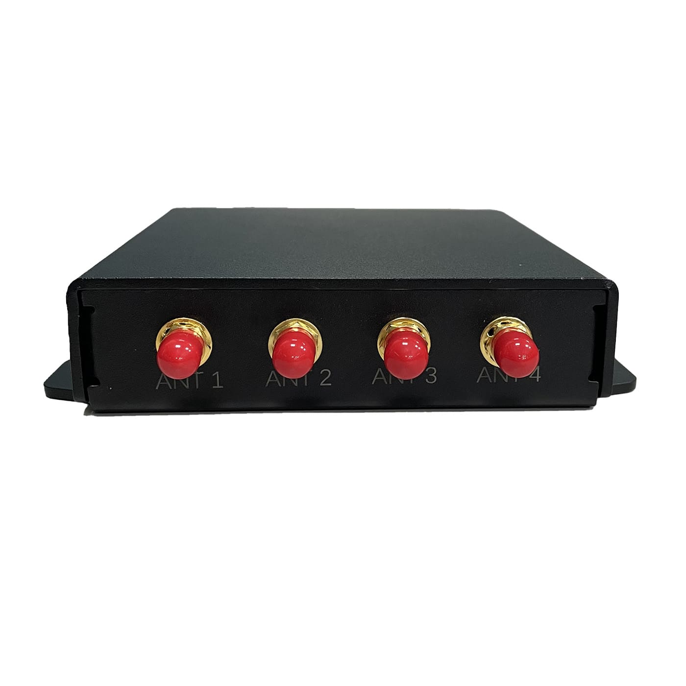
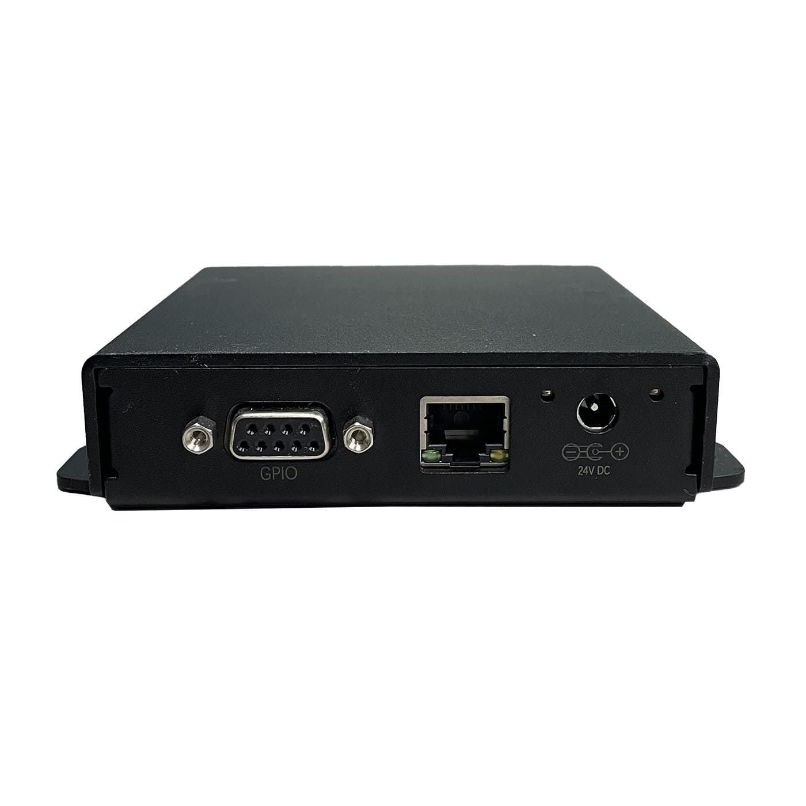
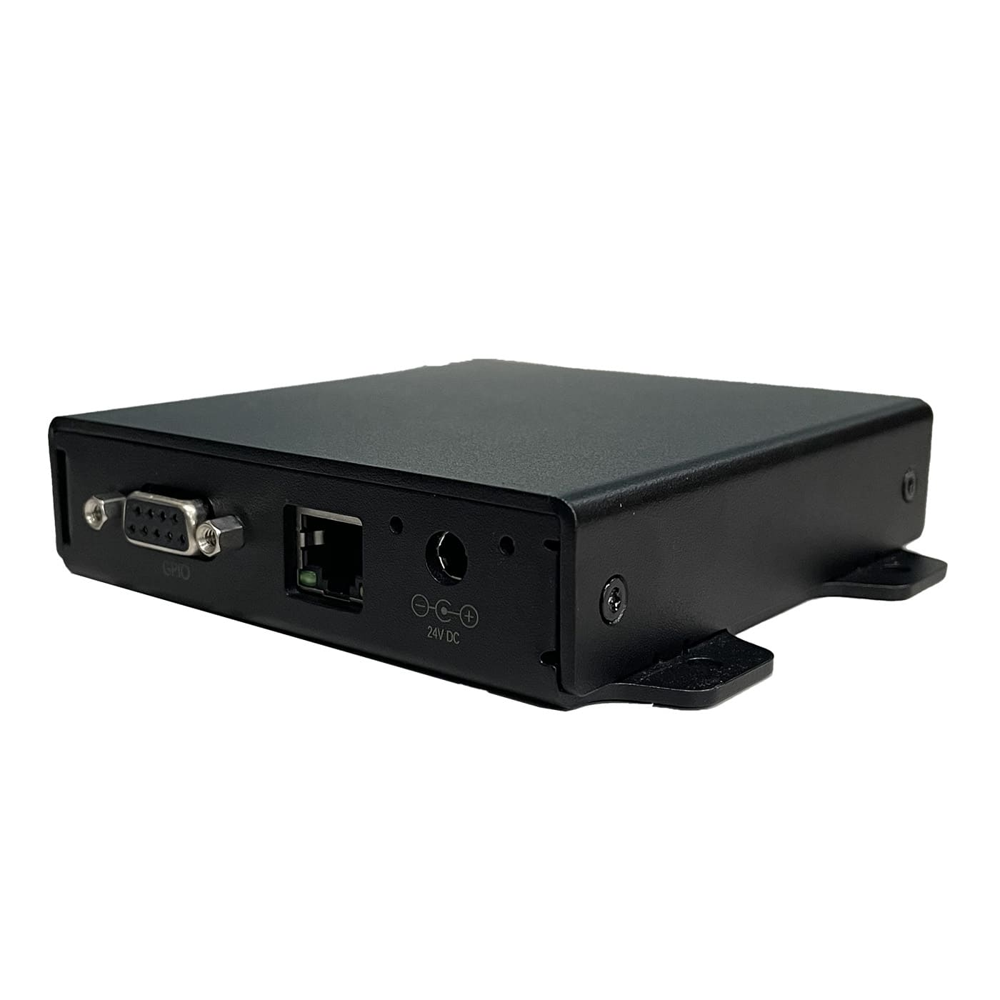
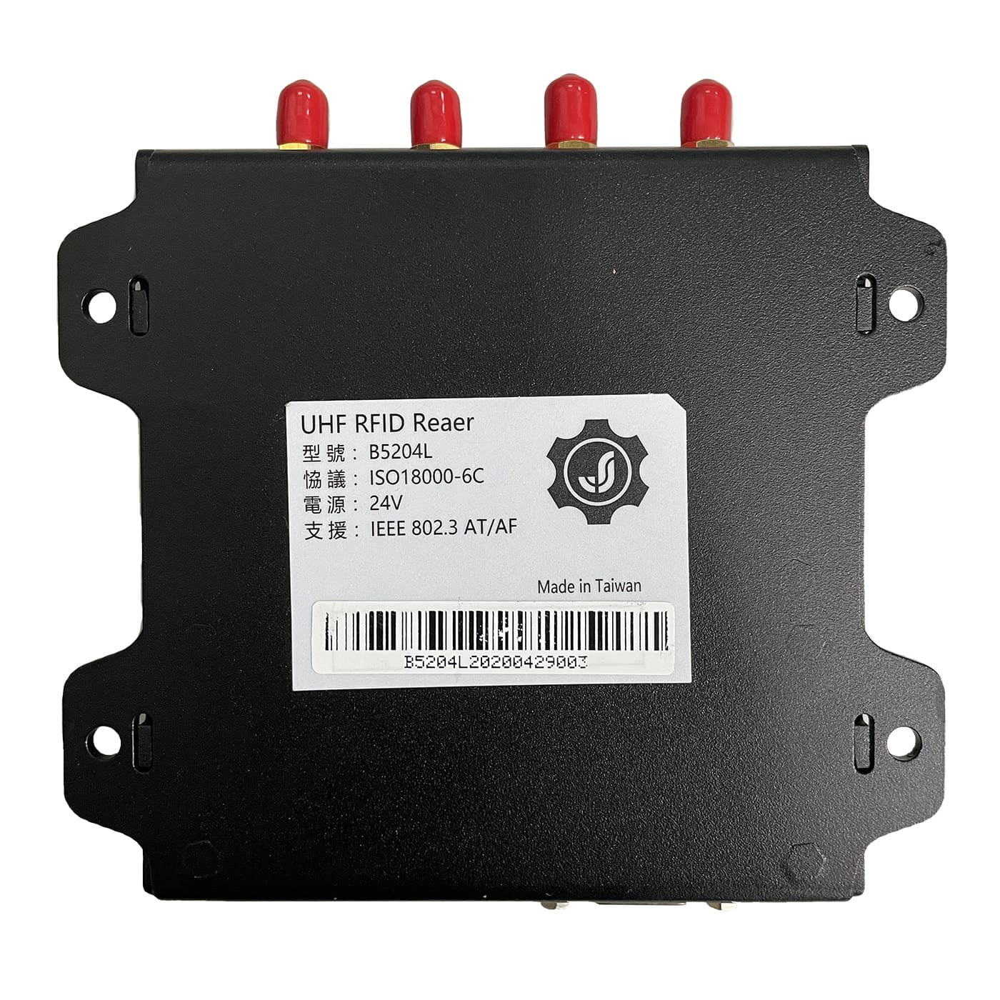
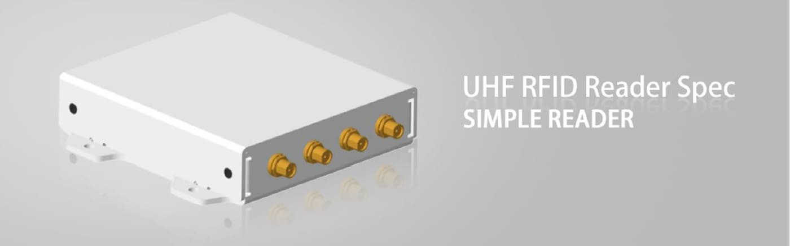

關於英寶
About
服務內容
Service
專案產品
Product
企業廠務
安全監控
自動化控制
公衛醫療
品牌經銷
Dealer
客戶夥伴
Partners
人才招募
Recruit
員工專區
Staff
|
E
繁
简
×
委案諮詢
英寶科技股份有限公司
委案專線：+886-4-26201610
服務信箱：amyHsu@ypro.com
公司地址：台中市清水區吳厝路158號
DEALER
品牌經銷
JSUN
|
EGL
|
TYCO




【JSUN】UHF RFID Reader-(B5204L)
超高頻讀寫器(B5204L)
• 核心芯片採用 Impinj R2000 的超高頻 RFID 讀寫晶片,具有優秀的讀寫能力。
• 提供乙太網界面以及多個標準輸出、輸入。
• 體積小巧,安裝方便。
• 內置高速處理器,具有自我檢測錯誤能力。
• 可以搭配 GPIO BOX 控制外部設備。
• 可被廣泛應用於自動化生產線、分揀中心及其他簡易讀取的場合。
商品特色
介面說明
規格參數
商品特色

• 核心芯片採用 Impinj R2000 的超高頻 RFID 讀寫晶片,具有優秀的讀寫能力。
• 提供乙太網界面以及多個標準輸出、輸入。
• 體積小巧,安裝方便。
• 內置高速處理器,具有自我檢測錯誤能力。
• 可以搭配 GPIO BOX 控制外部設備。
• 可被廣泛應用於自動化生產線、分揀中心及其他簡易讀取的場合。
尺寸說明
介面說明
腳位
定義
說明
Pin 1
GPO 0
驅動能力:20mA max
低電平:0 to 0.8V
高電平:2.4 to 3.3V
Pin 4
GPO 1
驅動能力:20mA max
低電平:0 to 0.8V
高電平:2.4 to 3.3V
Pin 5
GND
電源地
Pin 6
GPI 0(可配置為 GPO 2)
GPI,下波緣觸發,低有效
低電平:0 to 0.8V
高電平:2.4 to 3.3V
Pin 7
GPI 1(可配置為 GPO 3)
GPI,下波緣觸發,低有效
低電平:0 to 0.8V
高電平:2.4 to 3.3V
Pin 8
NC
NC
Pin 9
+5V
輸出 5V/500mA
規格參數
讀寫晶片
可選配 Impinj IndyTM R2000
功能介面
RJ45
4 PIN GPIO,RSSET 鍵
RS232(Option)
天線數量
外接四天線,SMA(母頭)
支援協定
ISO18000‐6C/ EPC Global C1G2
支持頻段
NCC
FCC
CCC
發射功率
0dBm ~ +30dBm
接收靈敏度
-83dBm
調製方式
BSD_ASK/M0/40KHz;PR_ASK/M2/250KHz;
PR_ASK/M2/300KHz;BSD_ASK/M0/400KHz
調製解調器端口
通過PCMCIA（僅限於兼容C•CURE 800/8000的型號）
供電方式
直流電源, PoE
功耗
MAX:9W,待機:1.5W
輸入電壓
12~24 VDC@直流供電
工作溫度
‐20°C~+50°C
儲存溫度
‐40°C~+70°C
工作濕度
10%~90%
軟體 SDK
Microsoft .NET API、C/C++ API、Java API
物理尺寸
121(L)x 105(W)x 26(H)mm